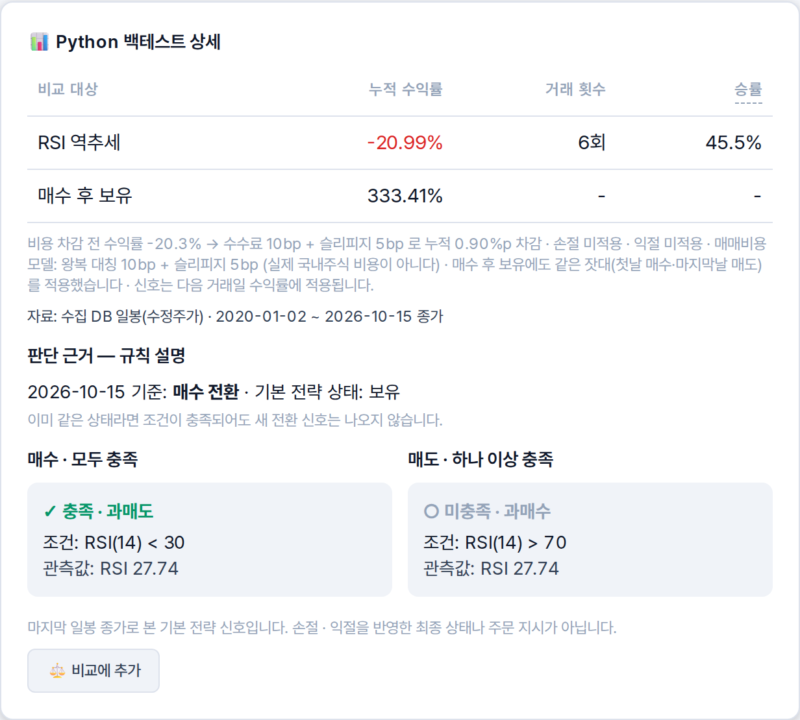
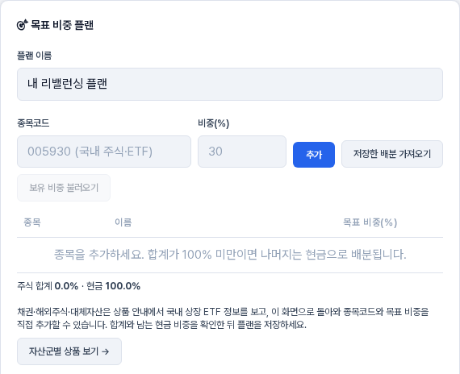
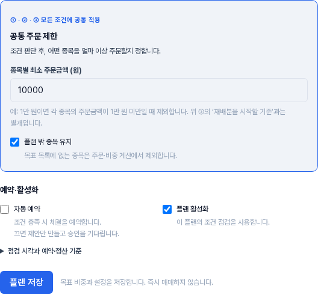
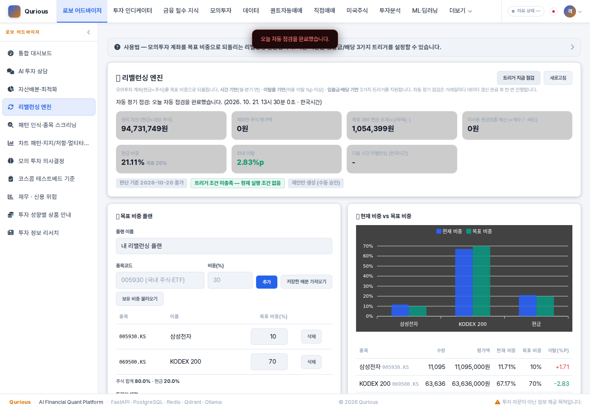

자기 투자 규칙이 있는 개인투자자가,
공식 자료를 매일 모아 검증하고, 근거가 있는 답만 하며, 비용을 뺀 성과를 모의투자로 기록합니다
2차 프로젝트 발표 · 2026-10-21 · 자료 v1.0
인사 뒤 한 문장: 「Qurious 는 자기 투자 규칙이 있는 개인투자자가, 그 규칙을 믿어도 되는지 판단하게 돕는 로보 어드바이저입니다.」
발표 순서
문제에서 시작해 시스템, 사람별 구현, 한계 순서로 말씀드립니다
1 문제와 시장 왜 이 서비스인가 · 규제가 설계를 정한 방식
2 서비스와 시스템 구조 사용자 여정 · 전체 구성 · 기술 선택
3 사람별 구현과 결과 이동원 · 신장환 · 오준영 · 강민석
4 품질 · 한계 · 3차 계획 시험과 결함 · 남은 일 · 실시간 확장
5 질의응답 기획 의도 · 기술 선택 · 구현과 결과
「발표는 문제 → 시스템 → 사람별 구현 → 한계 순서입니다.」
1 · 문제와 시장
개인투자자 대부분은 자기 규칙이 맞는지 확인할 방법이 없습니다
28%
2020 ~ 2022년 개인투자자 10만 2천 명 중
1,442만 명
주식을 가진 개인
31.5%
그중 한 종목만 가진 사람
세 숫자가 말하는 것은 같습니다. 판단의 근거와 결과를 비용까지 넣어 되돌아볼 도구 가 개인에게는 없습니다.
출처: 자본시장연구원 연구보고서 26-04(2026-02-09) · 한국예탁결제원 2025년 결산 주식 소유자 현황(2026-03-18) · 조회 2026-10-15
「2020년부터 3년 동안 개인투자자 10만 명을 따라가 보니, 거래 비용을 빼고도 돈을 번 사람은 국내 기준 28% 였습니다.」 → 다음 장 「그럼 지금 도구들은 무엇을 하나」.
1 · 문제와 시장
지금 도구는 「맡기는」 쪽에 몰려 있고, 과장 광고는 위법입니다
99.6%
검증을 통과한 로보어드바이저 계약 중
133건
「목표 수익률」 같은 광고로 적발된 위법(유사투자자문 105개 업체 · 2025년)
우리가 서는 자리
스스로 판단하려는 사람에게 필요한 것은 대신 굴려 주는 서비스가 아니라 근거 입니다
그래서 화면의 숫자마다 출처와 기준일 을 붙이고, 근거가 없으면 답하지 않습니다
수익률을 약속하지 않고, 성과는 비용을 뺀 기록 으로만 보여 줍니다
출처: 코스콤 RA 테스트베드 「RA 시장규모 추이(26년 9월말)」(2026-10-12 게시 · 테스트베드 통과사만) · 금융위원회 보도자료(2026-04-20) · 조회 2026-10-15
「일임」 은 알아서 굴려 주는 계약, 「자문」 은 조언만 받는 계약으로 풀어 말한다. 오른쪽 세 줄이 이 서비스의 설계 원칙이라고 말하고 넘어간다.
1 · 문제와 시장
국내 상장 주식 3,308종목을, 상장폐지된 종목까지 다룹니다
거래 시간 · 결제 · 세금 규칙이 데이터를 언제 받고 무엇을 비용으로 뺄지 정했습니다
시장과 범위
코스피 · 코스닥 · 코넥스 일봉 2020-01-02 ~
상장폐지 종목도 포함 — 살아남은 종목만 보면 성과가 부풀기 때문ETF · 지수 일봉, 분봉(대상 401종목) 하루 시간
정규장 09:00 ~ 15:30 · 공식 종가는 15:30
애프터마켓 16:00 ~ 20:00(2026-09-14 신설) · 대체거래소 08:00 시작
공공데이터 시세는 다음 영업일 낮 에 공개 → 매일 12:30 에 받음 비용 규칙
결제 T+2
거래세 2026년 코스피 0.05% + 농특세 0.15% = 0.20%
가격 제한 ±30% — 성과는 이 비용을 뺀 뒤 에만 셈
출처: 프로젝트 계획서 수집 데이터 표(2026-09-29 일봉 기준 3,308종목) · 시장 범위 · 거래 기준 조사서(조회 2026-10-10)
「살아남은 종목만으로 전략을 시험하면, 망한 회사를 처음부터 피한 것처럼 성과가 부풉니다. 그래서 상장폐지 종목까지 받습니다.」 · 공개 시각 때문에 12:30 에 받는다는 점을 짚는다(뒤 「실시간」 장과 이어짐).
1 · 문제와 시장
규제 다섯 가지를 기능 규칙 다섯 가지로 옮겼습니다
규제 · 약관 무엇을 막나 우리 설계 규칙
자본시장법 제6조 제7항 특정 종목 · 매매 시기에 대한 조언은 「투자판단」 — 자문업 등록 대상 신호는 누구에게나 같은 규칙 신호의 집계로만 · AI 상담은 권유 · 가격 예측 질문을 돌려보냄 금융위원회 광고 기준(2026-04-20) 실현되지 않은 수익률을 내세운 광고 화면에 수익률 약속 없음 · 성과는 비용을 뺀 과거 기록만 과제 범위 실제 돈이 움직이는 자동 주문 실계좌로 가는 주문은 서버 한 곳에서 막고 모의로 낮춤(시험으로 지킴) 공공누리 제4유형 시세 자료의 변경 · 재배포 · 상업 이용 원자료는 비공개 저장소에만 · 화면에 출처 표시 서비스 약관 네이버 검색 API 결과 저장 · KRX 자동 수집 쓰지 않음 · 사람이 직접 받은 파일만
법률 자문이 아니라 조사서의 해석입니다 · 출처: 공시 · 재무 · 뉴스 이용 조건 조사서 · 자료 안내 출처 대장(14곳)
「기능을 먼저 만들고 규제를 확인한 게 아니라, 규제를 먼저 읽고 기능의 선을 정했습니다.」 질문이 오면 맨 뒤 질의응답 장(AI 답 · 시세)으로.
2 · 서비스와 시스템 구조
성향 진단에서 근거 상담까지, 일곱 걸음을 네 명이 나눠 만들었습니다
1
성향 진단 · 자산 배분
질문 일곱 개로 성향을 알고 자산군 비중을 나눔
오준영 영상 V01
2
상품 안내
나눈 비중대로 상장 상품을 공시 정보로 비교
이동원 영상 V02
3
신호 · 패턴
규칙 신호로 종목을 거르고 차트 패턴을 읽음
신장환 영상 V03
4
모의 주문
가상 돈으로 국내 · 미국 주식을 주문(비용 먼저)
강민석 영상 V04
5
리밸런싱
목표 비중에서 벗어나면 다시 맞추는 계획
오준영 영상 V05
6
계좌 · 성과
비용을 뺀 성과와 판단 기록을 되돌아봄
강민석 영상 V06
7
근거 상담
근거를 댈 수 없으면 답하지 않는 AI 상담
이동원 영상 V07
밑바탕: 매일 낮 공식 자료를 모아 검증하고(이동원), 신호마다 쉬운 말 설명을 붙입니다(신장환)
영상은 모두 시연 전용 계정 · 가상 돈 · 투자 권유가 아닌 기능 시연입니다
「지금부터 이 차례대로, 맡은 사람이 자기 칸을 보여 드립니다.」
2 · 서비스와 시스템 구조
2차는 로보 어드바이저, 3차는 투자 인디케이터를 같은 자료 위에 만듭니다
이름 2차 · 로보 어드바이저(10-21) 3차 · 투자 인디케이터(10-22 ~ 11-11) 발표 영상
이동원 · 팀장 용어사전 · 투자 자료 수집 · 근거 문서 질의응답(RAG) · 일정과 정기 배치 + 주인이 없던 화면(상품 안내 · 자료 안내 등) TradingView · Pine 지표 성과 확인 V02 · V07 · F01 ~ F06 신장환 추천 이유를 쉬운 말로 설명 · 패턴 인식 기본 · 커스텀 인디케이터 V03 오준영 자산배분 · 포트폴리오 최적화 · 리밸런싱 증권사 API 연동 자동화 V01 · V05 강민석 퀀트 결과 해석 · 모의투자 의사결정 QuantConnect LEAN 성과 검증 V04 · V06
모든 기능이 같은 날짜의 같은 자료를 읽도록, 자료 수집 · 검증 · 백업은 한 곳(이동원)에서 맡았습니다.
출처: 프로젝트 계획서 v2.0 4절(역할 확정 2026-10-01)
2 · 서비스와 시스템 구조
PC 한 대에서 도커 서비스 10개와 도커 밖 수집기가 함께 돕니다
입구는 포트 8966 하나 · 수집 DB 는 러너만 쓰고 앱은 읽기만 · 자동매매와 리밸런싱은 Celery 예약으로 웹 요청과 떼어 돌립니다
출처: docker-compose.yml(서비스 10) · scripts/daily_update.py(21단계) · API 명세서 v0.34(라우트 266) · 그림 원본 docs/img/architecture/qurious-architecture_v2.1.svg
「왼쪽 초록 상자가 도커 밖 수집기, 오른쪽이 도커 서비스입니다. 굵은 선 두 개가 읽기 전용 길인데, 앱은 수집 DB 에 절대 쓰지 않습니다. 쓰는 쪽을 하나로 두면 자료가 섞이지 않고, 수집이 실패해도 서비스는 멈추지 않습니다.」
2 · 서비스와 시스템 구조
기술은 「쓰는 쪽이 누구인가」 와 「비용 · 자료 반출」 로 골랐습니다
영역 쓴 것 고른 이유 견준 대안과 버린 까닭
웹 · API FastAPI(Python) 수집 · 분석 · AI 코드가 모두 파이썬 — 한 언어로 · OpenAPI 문서가 저절로 Node.js — 분석 라이브러리를 따로 붙여야 함 앱 DB PostgreSQL 사용자 · 주문 · 체결 장부 — 트랜잭션과 외래키가 필요 — 수집 DB SQLite(파일 하나 · 5.1 GB) 쓰는 쪽이 러너 하나 · 파일째 백업 · 앱은 읽기 전용 PostgreSQL 한곳 — 시장 자료와 사용자 기록의 크기 · 백업 주기가 다름 예약 작업 Celery + Redis 자동매매 10분 · 리밸런싱 1시간을 웹 요청과 떼어 실행 앱 안 스레드 — 앱이 다시 뜨면 끊김 매일 수집 작업 스케줄러 + 러너 큰 DB 를 PC 디스크에 두고, 앱이 꺼져도 수집 Celery Beat — 컨테이너에 수집기 코드가 없어 예약이 실패했던 기록 검색 SQLite FTS5 + Qdrant(bge-m3) 조문 번호 · 용어는 낱말 검색이, 일상 말은 의미 검색이 강함 → 섞음 의미 검색만 — 정답 찾는 비율 0.86(섞으면 0.94) 답 모델 Ollama · qwen3:4b-instruct(로컬) 비용 0 · 질문이 밖으로 나가지 않음 · 찾은 조문만 쓰게 하면 작은 모델로 됨 상용 API — 비용 · 자료 반출(개인 한도 3만 원) 백업 Hugging Face 비공개 데이터셋 판(커밋)과 지문이 남고 팀이 같은 판을 받음 클라우드 저장소 — 2 · 3차에는 쓰지 않기로 팀 결정
질문 「왜 이 기술?」 이 오면 이 표의 넷째 칸(버린 까닭)으로 답한다. 숫자 0.86 · 0.94 는 뒤 근거 답 결과 장.
2 · 서비스와 시스템 구조
실거래 · 증권사 키 · 원자료에는 넘지 않는 선을 두었습니다
지키는 것
실계좌로 가는 주문은 서버 한 곳에서 막고 모의로 낮춥니다 — 시험이 지킵니다
증권사 키는 사용자마다 따로 저장 · 공용 키로 남의 계좌에 닿지 않음
수집 DB 는 앱에 읽기 전용 으로만 붙음 · 비밀값은 설정 파일에만
주문 앞 위험 관문: 중복 주문 쿨다운 · 하루 주문 수 · 종목 비중 · 하루 손실 한도 · 비상 정지 알고 있는 남은 위험
개발용 DB 포트 여섯이 이 PC 의 모든 망에 열려 있음
앱 컨테이너에 도커 소켓이 붙어 있음(LEAN 백테스트용)
둘 다 팀 공용 구성이라 고치기 전에 팀 논의가 필요
남은 위험을 먼저 말하는 이유: 질의응답에서 「보안은?」 이 오면 이미 알고 있고 무엇을 할지 정해 두었다고 답하기 위해서.
3 · 사람별 구현과 결과
이동원 — 데이터와 근거 답
모든 기능이 같은 날짜의 자료를 읽게 하는 매일 수집 · 검증 · 백업과, 근거를 댈 수 없으면 답하지 않는 AI 상담을 만들었습니다.
이동원 팀장 · 데이터 · 근거 답
에이전트가 믿고 쓸 수 있는 자료와 도구를 만드는 개발자를 지향합니다
쓰는 기술
Python · FastAPI · SQLite / PostgreSQL · Docker · RAG(낱말 + 의미 검색 · 로컬 LLM) · 시험 자동화
지향 직무
AI 에이전트 · 에이전트 플랫폼 개발 — 에이전트가 쓰는 자료 · 도구 · 실행 통로를 믿을 수 있게 만드는 일
2차에 맡은 일
투자 자료 수집 · 검증 · 백업(매일 12:30) · 근거 문서 질의응답 · 용어사전 · 일정 · 주인이 없던 화면(상품 안내 · 자료 안내 · 개념 학습)
3차에 맡을 일
TradingView · Pine 지표의 성과 확인 · 실시간 시세 구조
자기소개는 본인 말로 다듬는다(이 장의 낱말은 저장소 기록에서 옮긴 것). 「제가 맡은 일은 크게 둘입니다 — 자료와 근거 답.」
이동원 · 데이터 파이프라인
매일 12:30, 한 회차가 21단계를 차례로 지납니다
왜 이 순서인가 원본을 다 받은 뒤에만 계산하고, 계산이 끝난 뒤에만 백업합니다 — 반쯤 받은 자료로 계산하거나 반쯤 된 표를 백업하지 않게 하려는 것입니다.
출처: scripts/daily_update.py 단계 목록 · 2026-10-19 회차 기록(python scripts/daily_update.py status) · 그림 원본: 그림/02-매일회차-완성.svg
「받기 여덟, 계산 일곱, 백업 다섯, 근거 문서 하나입니다. 순서를 지키는 이유는 하나 — 반쯤 된 자료가 계산이나 백업으로 넘어가지 않게.」 실패하면? → 질의응답 「실패 대응」 장.
이동원 · 데이터 구조
받은 원본은 그대로 두고, 계산한 표는 매일 원본에서 다시 만듭니다
왜 나눴나 계산 규칙을 고치면 파생 표는 원본에서 다시 만들면 됩니다(손으로 고치지 않음). 「자료 없음」 · 「휴장이라 없음」 · 「받다가 실패」 를 가르려고 받은 날마다 상태를 따로 적습니다.
표 정의: collector/db.py · 데이터 사전 · 계산: collector/adjust.py · collector/benchmark.py · 그림 원본: 그림/04-원본파생-완성.svg
이동원 · 데이터 구조
같은 날 같은 종목의 가격을 세 표에 따로 둡니다
표 무엇인가 어디에 쓰나
일별 시세 포털이 준 값 그대로 정산 · 출처 대조 수정주가 분할 · 병합 · 권리락을 이은 값(가장 최근 날 = 1.0) 지표 · 차트 · 신호 총수익 지수 배당까지 재투자한 값(첫날 = 1.0) 성과 · 벤치마크
세 표의 행 수는 4,506,634 로 같습니다. 조정 이벤트는 2,710건(분할 · 병합 1,411 · 권리락 1,048 · 사람이 볼 것 249 · 주식 수로 조정 2).
왜 셋인가 — 실제 예
제일바이오는 감자 뒤 거래 재개일(2026-02-09)에 포털 등락률이 +29,948% 였습니다
주식 수가 줄어 1주 값이 커진 것일 뿐, 가치를 이어 보면 −79.97% 였습니다
받은 가격만 쓰면 폭락을 폭등으로, 분할을 폭락으로 읽습니다 — 그래서 셋을 나눴습니다
출처: 수집 DB 조정 이벤트 실측(2026-10-02) · 행 수는 마지막 거래일 2026-10-15 기준 숫자 파일 · 수정주가와 총수익은 누적 방향이 반대라 섞어 계산하지 않음
「+29,948% 는 버그가 아니라 받은 그대로의 값입니다. 감자로 주식 수가 줄었기 때문입니다. 이걸 그대로 지표에 넣으면 신호가 완전히 틀립니다.」
이동원 · 데이터 구조
미래 정보가 섞이지 않게 「그날 알 수 있었나」 를 지킵니다
공개 시각 시세는 다음 영업일 낮에 공개 → 화면의 마지막 일봉은 직전 거래일 것 그래서 숫자마다 기준일과 출처 를 밝힙니다 정정 공시 재무는 접수일마다 판을 남기고, 어떤 날의 판단에는 그날 전에 접수된 판 만 씁니다 받은 72,248판 중 4,288판(5.9%)이 기한보다 늦게 접수된 정정본 생존 편향 상장폐지 종목까지 받아, 망한 회사를 처음부터 피한 것처럼 성과가 부풀지 않게 합니다
세 규칙은 신호 · 백테스트 · 성과 검증이 같은 자료를 읽기 때문에 한 곳(수집 DB)에서 지킵니다.
출처: 재무 수집 기록(정정본 판 수) · 시점 정합 API(as_of · pit) · 공공데이터포털 주식시세정보 갱신 안내
이동원 · 데이터 구조
자료는 저장소 여섯에 나뉘고, 두 DB 는 읽기 전용 길 하나에서만 만납니다
저장소 무엇을 담나 누가 쓰나 크기 · 규모
수집 DB(SQLite) 시세 · 배당 · 공시 · 재무 · 일정 · 뉴스 · 파생 표 러너만(매일 12:30) · 앱은 읽기만 약 2,192만 행 · 5.1 GB 앱 DB(PostgreSQL) 사용자 · 주문 · 체결 · 보유 · 리밸런싱 · 대화 앱(사용자 동작마다) 45표 근거 문서 DB 법령 · 감독규정 조문 사람이 받은 원문 · 앱은 읽기만 법령 10 · 감독규정 4 · 조각 4,067 섹터 법령 DB 산업별 근거 법령 러너(7일에 한 번 개정 대조) 117문서 · 조 71,851 검색 색인 공시 · 뉴스 낱말 색인 러너(바뀐 것만) — Qdrant 문서 조각의 의미 벡터 앱 컬렉션 둘
시장 자료와 사용자 기록은 크기도, 백업 주기도, 쓰는 사람도 다릅니다. 그래서 DB 를 나눴고, 만나는 곳을 읽기 전용 하나로 묶었습니다.
출처: ERD · 데이터 사전 · 매일 수집 러너 숫자 파일(2026-10-18 회차 뒤 21,921,301행)
이동원 · 운영
백업은 매일, 복구는 매주 실제로 해 봅니다
102
매일 올리는 파일
564초
복구 리허설
0건
값까지 보는 깊은 대조의
백업이 있다는 것과 복구된다는 것은 다릅니다. 그래서 매주 일요일, 백업에서 DB 를 새로 만들어 원본과 값까지 맞대 봅니다.
출처: 주간 리허설 기록(python scripts/weekly_rehearsal.py status — 2026-10-18 15:34 ~ 15:44) · 백업 상태 기록(2026-10-18) · 원자료는 이용 조건 때문에 비공개 저장소에만 둡니다
이동원 · 근거 문서 질의응답(RAG)
근거 답은 찾기 → 쓰기 → 거르기를 지나야 화면에 나옵니다
왜 서버가 다시 거르나 출처 번호가 맞아도 지어낸 답이 있었습니다 — 답 모델 다섯이 모두 번호 검사를 통과했지만 둘은 근거 밖 질문에 답을 지어냈습니다. 문맥 4,500자는 이 PC 내장 GPU 의 한계입니다.
코드: app/services/kb_answer.py · kb_search.py · 숫자: docs/시험/근거답-품질보고서.md 표 1 · 6 · 그림 원본: 그림/03-근거답흐름-완성.svg
「걸리면 답 대신 찾은 조문 발췌를 보여 줍니다. 틀린 답보다 『근거로 답하지 못했습니다』 가 낫다고 봤습니다.」
이동원 · 근거 문서 질의응답(RAG)
정답 조문을 50문항 중 47번 찾았고, 근거 밖 질문에 지어낸 답은 없었습니다
정답 조문이 상위 5개 안에 든 비율(50문항)
낱말 검색만 0.78
의미 검색만 0.86
둘을 섞음(앱 기본) 0.94
왜 섞으면 오르나 — 낱말 검색은 질문에 법령 용어가 그대로 있을 때 강하고, 의미 검색은 일상 말 질문에 강합니다. 서로 놓친 조문을 메웁니다일상 말을 법령 말로 넓히기 전에는 43, 넓힌 뒤 47 — 놓친 셋은 정답 조가 상위 10 밖으로 빗나간 경우입니다
근거 밖 질문 3개 → 지어낸 답 0 모두 「근거로 답하지 못했습니다」 로 끝났습니다. 다만 세 문항은 작은 표본입니다.
AI 채점은 지표에서 뺐습니다 AI 채점이 사람 판정을 가르는 정도가 0.658(0.5 = 동전). 단서(「다만 …」)를 빠뜨린 맞은 답에 낮은 점수를 줬습니다 — 사람 판정 표본으로 봅니다.
출처: 근거 답 품질 보고서 v0.1 표 1 · 표 6(측정 2026-10-03 ~ 10-06 · 로컬 답 모델) · 답 15문항 중 정답 12(95% 구간 0.55 ~ 0.93) · 공시 · 뉴스 근거 답은 아직 재지 않음
숫자마다 재는 법을 말한다: 「정답 조문을 미리 정해 둔 50문항으로, 찾은 상위 5개 안에 정답이 있는지 셉니다.」 한계(표본이 작음)를 먼저 말한다.
이동원 · 문제 해결 ①
앱의 데이터 API 가 갑자기 500 을 냈습니다 — 원인은 DB 보조 파일이었습니다
문제
데이터 화면의 API 여러 개가 「unable to open database file」 로 멈춤. 같은 꼴이 근거 문서 DB · 검색 색인 · 수집 DB 에서 세 번
원인
앱은 SQLite 를 읽기 전용 으로 붙여 엶. WAL 모드에서는 PC 쪽의 마지막 연결이 닫힐 때 보조 파일(-wal · -shm)이 지워지고, 읽기 전용인 앱은 그것을 다시 만들 수 없음
해결
읽기 전용으로 붙는 근거 문서 DB · 검색 색인은 롤백 저널 로 바꿈. 수집 DB 에 쓰는 명령 뒤에는 점검을 돌리고, 시험은 실제 DB 를 열지 않게 함
결과
점검 「데이터」 항목 전부 정상 · 시험이 가짜 단계라 못 잡았던 것을 실제 실행 뒤 점검 으로 잡는 규칙이 생김
배운 점 — 시험이 통과해도, 새 명령은 한 번 실제로 돌린 뒤 기능 점검까지 해야 합니다.
결함대장 DF-67 · DF-74 · DF-81(테스트 계획서 5절)
이동원 · 문제 해결 ②
출처 번호는 맞는데 답을 지어내는 경우가 있었습니다
문제
시험한 답 모델 다섯이 모두 출처 번호는 맞혔지만 , 그중 둘은 근거가 없는 질문에 답을 지어냄
원인
출처 번호 검사는 「인용한 번호가 찾은 조문 안에 있나」 만 봄 — 문장 내용이 조문에 있는지는 보지 않음
해결
서버 거름 둘을 더함 — 근거 없는 단정 · 질문 되풀이 . 걸리면 답 대신 찾은 조문 발췌. 평가에서 찾은 틀린 꼴마다 거름을 늘림
결과
근거 밖 질문 3개에 지어낸 답 0 · 「근거로 답하지 못했습니다」 가 틀린 답보다 낫다는 원칙을 화면에도 적용
배운 점 — 출처 번호 검사는 필요조건일 뿐입니다. 평가에서 나온 틀린 꼴을 하나씩 거름으로 막고, 사람 판정 표본으로 함께 봅니다.
출처: 근거 답 품질 보고서 v0.1 · 답 모델 비교(2026-10-04 ~ 06)
이동원 · 문제 해결 ③ 10-19 반영
「현재가」 가 실제보다 이틀 늦은 종가였습니다
문제
투자 인디케이터 화면의 삼성전자 현재가 210,000 · 실제 217,000 (약 3%) — 사용자가 장중에 직접 찾음
원인 — 설계
판단 · 백테스트를 같은 자료로 다시 돌릴 수 있게 다음 영업일에 공개되는 일봉 만 썼는데, 그 값을 「현재가」 칸에도 씀(화면 다섯 · 자동매매 체결가)
고침(2차)
지금 값을 한 곳에서 받는 서버 함수(quote_now) — 내 증권사 키 → 지연 시세 → 지난 종가 순 · 값마다 출처와 시각 · 「현재가」 화면 넷과 모의 주문 체결가(체결 직전에 다시 확인)까지
원칙
판단은 저장 자료, 실행 직전 확인과 표시는 실시간. 실시간 값이 아니면 「실시간」 이라고 쓰지 않고 날짜를 밝힘
출처: 실시간 시세 조사서 v1.0(2026-10-19) 1절 화면별 출처 표 · 6절 · 결함대장 DF-15 · 코드: app/services/quote_now.py · 시험 TC-QUOT 10건
「처음 설계에서 재현성을 우선했고, 그 대가로 장중 값이 늦었습니다. 그래서 기능을 두 갈래로 나눴습니다 — 다음 장.」 고친 뒤(10-19 장 마감 뒤) 같은 화면: 삼성전자 218,000원 「장 마감 · 지연 시세(약 20분) · 15:19 체결」 · 지표는 「지표 기준: … 10-16 종가」 로 따로 밝힘. 자동매매 체결가는 엔진 쪽이라 2차는 표기만 — 오준영 님과 3차.
이동원 · 한계와 확장
기능을 「저장 자료로 충분」 과 「실시간이 필요」 로 나눴습니다
이용 조건: 실시간 시세는 사용자 자기 키 · 자기 화면까지만 — 저장 · 공유하지 않고 「언제 어떤 값으로 판단했나」 만 남깁니다
출처: 실시간 시세 조사서 v1.0 3절(코스콤 정보이용정책 · KIS 약관 제5조 ③ · 야후 이용 조건 원문) · 7절 기능별 두 갈래
「실시간이 모든 곳에 좋은 것은 아닙니다. 백테스트에 장중 값을 섞으면 같은 날 두 번 돌린 결과가 달라집니다. 그래서 갈래를 나눴고, 3차에는 사용자 자기 키의 웹소켓 → Redis → SSE 로 갑니다.」
이동원 · 영상 V07 근거 상담
영상 파일을 찾지 못했습니다
질문 셋 답이 있는 질문
재생 전 한 줄: 「질문 세 개를 넣어 보겠습니다 — 답이 있는 질문, 근거가 없는 질문, 투자 권유 질문.」 재생 중에는 말하지 않는다(자막이 말한다).
이동원 · 영상 F01 매일 자료 수집 · 검증
영상 파일을 찾지 못했습니다
장면 데이터 관제
재생 전 한 줄: 「앞에서 말씀드린 21단계 회차가 화면에서는 이렇게 보입니다.」 시간이 모자라면 이 장은 건너뛴다(같은 내용이 앞 장에 있음).
이동원 · 해결 · 남은 과제 · 배운 점
재현할 수 있는 자료와, 거절할 줄 아는 AI 를 먼저 만들었습니다
해결한 문제
자료 공개 시각 · 정정 공시 · 분할과 감자를 다루는 수집 구조, 근거 없는 답을 막는 거름, 백업을 실제로 복구해 보는 리허설
남은 과제
공시 · 뉴스 근거 답 평가 · 사람 판정 두 명의 일치도 · 「현재가」 의 실시간 구조(3차) · 수정주가 단계 시간 줄이기
배운 점
시험이 통과해도 실제로 돌려 봐야 하고, 숫자는 재는 법과 한계를 같이 말해야 믿을 수 있습니다
다음 준비
3차 — TradingView · Pine 지표를 같은 자료로 성과 확인 · 실시간 시세를 사용자 자기 키로
넘김 한 줄: 「이렇게 쌓은 자료로 신장환 님이 신호를 계산합니다.」
신장환 신호 · 설명
신호가 왜 그렇게 나왔는지, 숫자로 재 보고 쉬운 말로 보여 줍니다
기술과 강점
Python · FastAPI · PostgreSQL · JavaScript · pytest — 강점은 숫자를 전 종목 자료로 다시 재 보는 것
관심 분야
퀀트 리서치 · 시장 신호와 전략의 검증 · 판단 근거를 설명하는 투자 도구
지향 직무
퀀트 리서처 — 그럴듯한 시장 신호가 정말 효과가 있는지 데이터로 검증하고, 근거를 설명할 수 있는 전략을 만드는 일
2차에 맡은 일
지표 정의 · 차트 패턴 통계 · 다중 주기 신호 · 신호와 추천 이유를 쉬운 말로(XAI) — 주담당 / 성과 · 모의투자 — 부담당
3차에 맡을 일
기본 · 커스텀 인디케이터 화면(주담당)
받는 말 한 줄: 「이동원 님이 쌓은 수정주가 일봉으로, 매일 12:30 회차에서 401종목의 신호를 계산해 남깁니다.」 「제가 맡은 일은 신호를 계산하는 것과, 그 신호가 왜 나왔는지 설명하는 것입니다.」
신장환 · 차트 패턴
패턴 11종 모두, 5거래일 뒤 수익률이 평소와 0.4%p밖에 다르지 않았습니다
왜 화면에 함께 두나 평소 = 같은 종목의 모든 날의 5거래일 뒤 평균(+0.25%) · 표 맨 아래 「기준선 — 아무 날」 줄입니다. 패턴 이름만 보면 「오른다 · 내린다」 로 읽기 쉬워서, 3,098종목 · 사건 154만 개로 잰 이 숫자를 패턴 옆에 함께 둡니다.
자료: 금융위원회 주식시세정보(공공데이터포털 · 공공누리 제4유형) · 출처: 설계서 ② · ①-5 v0.6 3.5(잰 날 2026-10-07 · 사건 날 2020-04-03 ~ 2026-08-24 · 상장폐지 포함) · 코드: app/services/pattern_stats.py event_study · 비용 없는 가격 통계이지 전략 성과가 아님 · 머리어깨 · 쌍봉 · 삼각형은 아직 없음
「골든크로스는 오른다, 데드크로스는 내린다 — 이름은 그렇게 말합니다. 3,098종목에서 154만 번을 재 보니 11종 모두 평소(같은 종목의 모든 날 평균)와 0.4%p 안이었습니다.」 재는 법: 패턴이 나온 날 종가 → 5거래일 뒤 종가, 같은 종목의 모든 날 평균과 견줌 · 같은 패턴이 5거래일 안에 또 나오면 한 번만 셈. 한계를 먼저 말한다.
신장환 · 다중 주기 신호 · 쉬운 말 설명
세 주기의 규칙 점수를 합쳐 매일 401종목에 신호를 남기고, 그 이유를 막대로 보입니다
왜 막대인가 막대를 모두 더하면 종합 점수가 됩니다. 어느 규칙이 판단을 끌었는지 바로 보이고, 자동매매 기본 규칙이 같은 종목을 다르게 보면 그 까닭도 함께 적습니다.
자료: 금융위원회 주식시세정보(공공데이터포털 · 공공누리 제4유형) · 출처: 설계서 ② · ①-5 v0.6 3.6(2026-10-08 · 하루 401종목 18초) · 3.7(2026-10-12 · 기여도 합 = 종합 점수, 401종목 모두) · 코드: app/services/mtf_signals.py combine · signal_explain.py explain · 신뢰도는 확률이 아님 · 캡처 2026-10-20 로컬 앱(이 PC 기록은 08-31 까지라 그 자리에서 계산)
「막대를 다 더하면 −0.3 입니다(+1.00 −0.5 −0.5 +0.5 −0.5, 주봉 −0.3 세 번, 60분 +0.2 세 번). 기준 ±1 에 닿지 않아 관망입니다.」 위 점선 칸: 자동매매 기본 규칙은 같은 종목을 매수로 봅니다 — 일봉 하나로 과매도 반등을 보는 규칙이라서이고, 화면이 그 까닭을 함께 적습니다.
신장환 · 모델 설명(XAI)
학습 모델의 판단 근거를 막대로 보이고, 규칙과 엇갈릴 수 있다고 먼저 밝힙니다
왜 확률을 뒤에 두나 배지의 % 는 모델의 분류 확률이지 수익이 날 확률이 아닙니다. 그래서 판단을 앞에, 확률을 뒤에 두고 그 뜻을 한 줄로 적습니다.
자료: 금융위원회 주식시세정보(공공데이터포털 · 공공누리 제4유형) · 출처: 설계서 ② · ①-5 v0.6 5.4.2 · 코드: public/js/robo.js xaiBadgeText(모델 학습은 팀 공용 코드) · 캡처 2026-10-19 로컬 앱(LG · 기준일 2026-10-15)
「SHAP 막대는 모델이 왜 그렇게 판단했는지를 보여 줄 뿐, 수익을 보장하지 않습니다.」 머리에는 두 모델이 있습니다 — 5일 수익률을 숫자로 예측하는 회귀, 오를지 내릴지를 고르는 분류. 둘의 이름을 나눠 적었습니다.
신장환 · 성과 검증 설명 성과 · 모의투자 부담당
성과 검증 결과에, 왜 샀고 팔았는지와 어떤 자료로 계산했는지를 붙였습니다

70) · 「비교에 추가」 단추">
왜 붙였나 수익률 숫자만으로는 그 전략이 언제 왜 샀는지 알 수 없습니다. 조건마다 충족 여부와 그날 값, 계산한 자료와 기간을 함께 보입니다.
자료: 금융위원회 주식시세정보(공공데이터포털 · 공공누리 제4유형) · 출처: 설계서 ② · ①-5 v0.6 5.4.5 · 코드: public/js/indicator.js · 거래가 한 번도 없으면 0.0% 대신 「신호 없음」 · 고를 수 있는 종목은 아직 다섯 · 캡처 2026-10-19 로컬 앱
「처음에는 이 자리에 전략과 다른 학습 모델(SHAP)의 근거가 붙어 있었습니다. 그 전략의 매수 · 매도 조건으로 바꿨습니다.」 이 예에서 규칙 전략은 매수 후 보유를 크게 밑돌았고, 화면은 그것을 그대로 보입니다. 강민석 님(성과 · 모의투자 주담당)의 화면에 붙인 설명입니다.
신장환 · 문제 해결 ①
같은 RSI 인데, 계산하는 곳마다 과매도 날 수가 2.6배 달랐습니다
문제
「RSI 30 미만」 인 날을 세면 기본 함수가 TradingView 보다 2.6배 많이 셈(2,653종목)
원인
평균 내는 법이 곳마다 다름 — RSI · ATR 은 단순 평균 vs Wilder 평활 , 볼린저 표준편차도 n−1 vs n
해결
TradingView 정의 한 벌 로 바꾸고, 자동매매 종목 점수도 같은 정의를 쓰게 함
결과
2,653종목을 다시 돌려 갈래 0 · TradingView 화면 값과 5일 대조 차 0.00 · 시험으로 지킴
같은 이름의 지표라도 정의부터 맞춰야 화면 · 신호 · 자동매매가 같은 숫자를 읽습니다.
출처: 설계서 ② · ①-5 v0.6 요약 2 · 3 · 3.9(TradingView 화면 값 대조 2026-10-16 · 삼성전자 2026-08 다섯 날)
신장환 · 문제 해결 ②
설명 배지가 실제 판단과 다른 말을 하고 있었습니다
문제
품질 관문이 관망으로 낮춘 28종목 중 22종목 에서 배지는 여전히 매수 · 매도
원인
관문은 응답 판단만 낮추고 배지는 모델 판단 그대로 · 배지 확률은 5거래일 전 줄 의 예측(7종목 판단이 다름)
해결
오늘 줄로 예측 · 배지를 「관망 · 모델 매수 n%」 꼴로 · 회귀 · 분류 모델 이름을 나눠 적음
결과
판단이 앞, 모델 확률이 뒤 · 「실제 수익 확률이 아님」 한 줄 · 시험으로 지킴
설명은 판단과 같은 날 · 같은 기준이어야 합니다. 근거가 맞아도 날짜가 다르면 다른 말이 됩니다.
출처: 설계서 ② · ①-5 v0.6 5.4.2(2026-10-15 · 31종목 · 2026-08-31) · 2026-10-19 로컬 앱 확인(회귀 GradientBoosting 26 · Ridge 5)
신장환 · 영상 V03 신호로 종목 살피기
영상 파일을 찾지 못했습니다
장면 스크리닝
재생 전 한 줄: 「규칙 신호로 후보를 좁히고, 한 종목의 차트와 근거를 읽어 보겠습니다.」 재생 중에는 말하지 않는다(자막이 말한다). 끝나고 한 줄: 「신호는 판단의 재료이고, 사고팔지는 사용자가 정합니다.」
신장환 · 해결 · 남은 과제 · 배운 점
지표 정의를 먼저 맞추고, 화면이 실제보다 더 말하지 않게 고쳤습니다
해결한 문제
지표 정의를 한 벌로 맞추고, 설명 배지가 실제 판단과 어긋나던 것과 모델 이름이 섞이던 것을 바로잡고, 성과 검증에 계산한 자료와 기간을 밝혔습니다
남은 과제
스크리닝이 31종목 고정 · 요청마다 계산(약 13초) · 머리어깨 · 쌍봉 · 삼각형 패턴 없음 · 성과 검증 종목 찾기 칸
배운 점
같은 RSI 라도 계산 방식에 따라 과매도 날이 2.6배까지 달라질 수 있어, 숫자를 쓰기 전에 정의부터 맞춰야 한다는 것을 배웠습니다
다음 준비
이번엔 「신호가 효과 있나」 를 쟀고, 다음은 「비용을 내고도 남나」, 그다음은 그 전략을 직접 운용하는 것입니다
배운 점을 말할 때: 「RSI 30 미만인 날을 세어 보니 평균 내는 방식 하나로 2.6배가 차이 났습니다(2,653종목). 그 뒤로는 숫자를 쓰기 전에 정의부터 맞춥니다.」 넘김 한 줄: 「제 신호와 오준영 님의 자동매매 기본 규칙은 같은 지표 정의를 쓰지만 판단 규칙이 달라서, 같은 종목에 다른 답이 나오기도 합니다. 2차에는 둘을 나란히 보여 주는 데까지 했습니다. 이어서 오준영 님이 자산 배분과 리밸런싱을 말씀드립니다.」
오준영 배분 · 리밸런싱
판단을 실행으로 연결하고, 그 결과를 DB 에 남기는 개발자를 지향합니다
쓰는 기술
Python · FastAPI · JavaScript · Docker — API · 저장 · 화면을 연결하고 시험합니다
지향 직무
AI 에이전트 개발 · DB 관리 — 도구 실행을 제어하고, 사용자별 상태와 실행 이력을 일관되게 관리하는 일
2차에 맡은 일
성향 기반 자산배분 · 결과 저장과 복원 · 리밸런싱 조건과 예약 정산 · 자동매매 계정 분리 · 증권사 주문 상태 표시 보완
3차에 맡을 일
증권사 API 연동 자동화 — 주문 접수 · 실제 체결 · 취소를 구분하고, 재시도와 실행 이력을 확인할 수 있게 연결
자기소개 문장은 검토용 초안입니다. 「신장환 님이 신호를 보고 종목을 살피는 부분을 설명해 주셨습니다. 저는 그다음, 얼마씩 나누어 담고 언제 다시 맞출지를 다뤘습니다. AI 에이전트 개발과 DB 관리를 지향하며, 이번에는 그 기반이 되는 실행 제어와 상태 저장을 경험했습니다.」 AI 모델이나 에이전트 자체를 이번에 새로 개발했다는 뜻은 아닙니다.
오준영 · 구현 구조
배분 결과를 저장하고, 같은 가격 기준으로 판단 · 예약 · 정산합니다
① 배분 · 저장
성향과 투자 기간으로 계산한 결과를 사용자별 DB 에 저장합니다. 새로고침 뒤 복원하고, 국내주식 부분을 리밸런싱 초안으로 가져옵니다.
② 조건 판단
시간 · 이탈률 · 현금흐름 조건을 점검합니다. 수집 준비를 확인한 뒤, 관리 대상 자산을 같은 전 거래일 원종가로 평가합니다.
③ 목표 비중 예약
목표 비중을 저장하고 다음 거래일 시가 체결 을 예약합니다. 예약만으로 현금과 보유 수량이 바뀌지는 않습니다.
④ 자료 확인 · 정산
체결일의 원시가가 수집되면 수량과 비용을 계산해 모의 장부에 반영합니다. 자료가 없으면 대기하고, 체결일과 확인일 을 나눠 남깁니다.
DB 에서 지키는 것 사용자별 잠금과 트랜잭션으로 중복 정산을 막고, 예약 뒤 계좌가 바뀌면 확인을 기다립니다 왜 예약과 정산을 나눴나 일봉이 뒤늦게 공개되므로, 판단할 때 아직 모르는 시가를 미리 쓴 것처럼 처리하지 않기 위해서입니다
코드: allocation_store.py save_result · rebalance_daily.py readiness · rebalance.py lock_user · rebalance_settlement.py reserve / settle
「저장한 배분을 바로 주문하지 않고, 초안 가져오기 → 플랜 저장 → 조건 판단 → 예약 → 정산으로 나눴습니다. 예를 들어 10월 1일 판단에서 10월 2일 시가를 예약하고, 그 시가가 공개된 뒤 장부를 확정합니다.」 기술 선택: PostgreSQL은 사용자 상태와 장부 트랜잭션, SQLite는 수집 자료 읽기. 수량 고정 예약이라는 옛 설명 대신 현재 구현의 목표 비중 예약을 설명합니다. 손으로 입력한 입출금·배당 이벤트는 반영하되, 배당 자동 수집·입금까지 완성했다고 말하지 않습니다.
오준영 · 설정 화면 ① 목표 비중
종목과 목표 비중을 정하고, 기존 배분을 가져올 수 있습니다

목표 비중의 합계와 현금을 함께 확인
종목 비중 합계가 80%라면 나머지 20%는 현금입니다. 100%를 넘는 플랜은 저장할 수 없습니다.
「종목코드 · 비중(%)」 → 「추가」
국내 주식·ETF 코드와 원하는 비중을 입력하면 목표 목록에 들어갑니다. 같은 종목을 다시 추가하면 그 종목의 비중을 바꿉니다.
「저장한 배분 가져오기」
자산배분 화면에서 저장한 결과 중 국내주식 부분 을 가져옵니다. 초안이므로 비중을 확인한 뒤 플랜을 저장합니다.
「보유 비중 불러오기」
현재 보유 종목의 비중을 목표 비중으로 복사합니다. 빈 계정이라 캡처에서는 비활성 상태입니다.
「자산군별 상품 보기」
채권·해외주식·대체자산 관련 국내 상장 ETF 정보를 확인하는 상품 안내로 이동합니다. 돌아와 코드와 목표 비중을 직접 추가합니다.
화면: 2026-10-20 로컬 실행 앱 · 캡처용 빈 계정의 기본 상태(입력값·화면 내용 변경 없음, 촬영 후 계정 정리)
「먼저 무엇을 얼마나 담을지 정합니다. 직접 종목을 추가할 수도 있고, 저장한 자산배분이나 현재 보유 비중을 가져와 시작할 수도 있습니다.」 코드 칸의 005930과 비중 칸의 30은 입력 예시로 보이는 자리표시자이며 저장된 종목이 아닙니다. 지금 캡처는 빈 계정이라 목표 목록이 비어 있고 보유 비중 불러오기가 꺼져 있습니다. 자산배분 가져오기는 국내주식 부분만 옮기며 해외주식·채권·대체자산을 자동 매수하지 않습니다. 버튼을 누르는 것만으로 주문하지 않고, 다음 장의 조건 설정을 확인해 플랜을 저장합니다.
오준영 · 설정 화면 ② 조건 판단
시간 · 이탈률 · 현금흐름은 「언제 조정할지」를 정합니다
① 시간 — 설정한 주기가 됐나
매월·분기·연의 첫 거래일이 기준입니다. 「사용 안 함」이면 시간 조건을 끕니다. 자료 준비 뒤 하루 한 번 자동 판단합니다.
② 이탈률 — 목표 비중에서 벗어났나
관리 종목과 현금 중 비중 차이의 절댓값이 가장 큰 값을 봅니다. 예: 목표 20% → 현재 25%면 5%p, 기준 5%p 이상이므로 충족합니다.
매 점검 시 : 시간 또는 이탈 충족주기 도래 시 : 시간과 이탈 모두 충족
③ 현금흐름 — 재배분 가능한 금액이 기준 이상인가
입출금·배당으로 생긴 미사용 예산 과 목표 대비 현금 초과·부족 을 비교합니다. 방향이 같을 때 둘 중 작은 금액이 기준 이상이면 충족합니다.
예시 종목 80%·현금 20% 목표 + 10만 원 입금 → 새 매수 예산 8만 원.
화면: 2026-10-20 수정한 로컬 실행 앱 · 빈 계정 기본값. 오른쪽 금액은 계산 방식 설명용 예시(화면 설정값과 별개).
「조건 판단 세 개는 언제 조정할지를 정합니다. 종목별로 너무 작은 주문을 제외하는 최소 주문금액은 다음 장의 공통 설정입니다.」 이탈률 확인 시점은 ② 상자 안에 있습니다. 현금흐름 조건은 시간·이탈 조합과 별도로 추가됩니다. 미사용 예산은 이벤트 금액 × 목표 종목 비중 합계로 생기고, 반대 방향 입출금은 상계하며 체결에 쓴 만큼 차감합니다. 목표 대비 남거나 부족한 현금과 예산의 방향이 일치해야 하며, 가능액이 0이면 금액 무관 설정도 충족하지 않습니다. 현금흐름만 충족하면 순입금·배당은 매수만, 순출금은 매도만 제안합니다. 시간·이탈 조건도 충족하면 전체 조정을 우선합니다. 입출금·배당 직후 즉시 매매하는 것이 아니라 다음 일별 점검에서 판단합니다. 일반 매매는 외부 현금흐름 예산에 넣지 않습니다.
오준영 · 설정 화면 ③ 공통 주문 제한 · 예약
최소 주문금액은 모든 조건에서 산출한 주문에 공통 적용합니다

「플랜 저장」은 목표 비중과 설정을 저장합니다.
종목별 최소 주문금액 — 작은 주문은 제외
① 시간 · ② 이탈률 · ③ 현금흐름 모두 적용 합니다. 종목별 주문금액이 설정값 미만이면 그 주문을 제외합니다.
최소 1만 원 예시 9천 원 주문 → 제외 / 2만 원 주문 → 금액 기준 충족
③ 현금흐름 기준과 무엇이 다른가
현금흐름 기준 : 재배분을 시작할 만큼 돈이 생겼는가?최소 주문금액 : 산출한 개별 주문이 너무 작지는 않은가?
플랜 밖 종목 유지
목표 목록에 없는 종목을 주문·비중 계산에서 제외합니다. 리밸런싱으로 건드리지 않을 보유 종목을 보호합니다.
자동 예약 · 플랜 활성화
자동 예약 켬 : 조건 충족 후 예약 / 끔 : 제안 후 승인플랜 활성화 : 이 플랜의 조건 점검을 사용합니다.
화면: 2026-10-20 수정한 로컬 실행 앱 · 캡처용 빈 계정. 최소 주문금액은 ‘종목 수량 × 가격’ 기준이며 비용·잔액도 별도 확인.
「현금흐름 재배분 기준과 최소 주문금액은 서로 다른 단계입니다. 먼저 조건을 보고, 그다음 종목별 주문을 산출할 때 작은 주문을 제외합니다.」 예를 들어 현금흐름 기준 5만 원에 재배분 가능액 8만 원이면 조건은 충족하지만, 종목별 산출 주문 중 9천 원짜리는 최소 주문금액 1만 원에 못 미쳐 빠집니다. 이 숫자는 설명용 가정값입니다. 실제 주문은 정수 수량·잔액·수수료도 확인합니다. 예약은 다음 거래일 시가 자료 수집 후 모의 정산으로 이어지므로 자동 예약을 켜거나 플랜을 저장하는 순간 바로 체결되는 것은 아닙니다. 화면은 조건 판단과 공통 주문 제한, 예약·활성화를 구분해 최소 주문금액이 ② 또는 ③에 종속돼 보이지 않도록 바꿨습니다.
오준영 · 영상 V01 성향 진단 · 자산 배분
영상 파일을 찾지 못했습니다
장면 성향 진단 → 자산 배분 · 이어서 V05 리밸런싱
오준영 · 맡은 일과 결과
예약이 실행됐는지보다, 현금 · 수량 · 비용이 맞는지 확인했습니다

2026-10-16 격리 화면 시험 · 합성 가격 / 시험 계좌
6 / 6
실수집 가격 재현 시나리오 통과
3회
같은 회차 반복 뒤
주식끼리 · 주식→ETF · ETF→주식을 정상 회차와 비필수 단계 실패 회차에서 각각 확인
수수료 · 세금의 기대값을 별도로 계산 해 장부와 대조 — 앱 계산 결과를 정답으로 재사용하지 않음
reserve / settle 로 예약과 정산 분리, lock_user 로 같은 사용자의 실행 순서 보호
한계: 실제 증권사 체결이나 수익률 검증이 아닙니다. 운영 수집 회차와의 연속 동작은 후속 확인 대상입니다.
수치: docs/시험/리밸런싱-실수집자료-정산검증.md(2026-10-12) · 화면: rebalance-ui-20261016 / isolated-manual-filled-history-and-ledger.png
「실제 수집 가격으로 주식과 ETF 조합을 바꿔 보고, 뉴스 단계가 실패한 경우도 돌렸습니다. 모두 같은 방식으로 현금·수량·비용을 따로 계산해 맞대 봤고, 같은 회차를 다시 실행해도 주문이 더 생기지 않는지 확인했습니다.」 왼쪽은 10월 16일의 별도 합성 화면 시험이며, 오른쪽 10월 12일 실수집 가격 검증의 직접 캡처는 아닙니다. 이번 발표자료 편집에서 시험을 새로 실행한 수치가 아니라 당시 결과서의 수치입니다.
오준영 · 해결 · 남은 과제 · 배운 점
계산 결과뿐 아니라, 누구의 상태를 언제 바꾸는지 설계해야 했습니다
해결한 문제
배분 저장·복원과 리밸런싱 연결 · 예약 중복 정산 방지 · 다른 계정의 자동매매 기록 노출과 중지 간섭 수정
남은 과제
실제 수집 회차와 자동 정산의 연속 검증 · 배당 자동 입금 · 여러 워커에 걸친 실행 제어 · 증권사 주문·체결 대조
배운 점
주문 접수와 체결을 구분하고, 사용자 경계와 트랜잭션을 함께 지켜야 합니다. 재시도해도 장부가 같은지까지 확인해야 합니다
다음 준비
3차 증권사 API 연동에서 실패·재시도·취소 이력까지 연결
근거: docs/시험/자동매매-계정분리-검증.md(2026-10-16 · 프로세스 내 사용자 분리) · PR #268(증권사 주문 상태 구분)
「기능이 한 번 동작하는 것에서 끝내지 않고, 다른 사용자가 동시에 쓰거나 다시 실행해도 기록이 맞는지 보게 됐습니다. 자동매매 계정 분리는 프로세스 안에서 검증한 범위라, 여러 워커에 걸친 분산 제어까지 끝냈다고 말하지는 않겠습니다.」 넘김: 「이렇게 남긴 주문과 장부를 바탕으로, 강민석 님이 비용을 반영한 성과와 모의투자 판단 기록을 설명하겠습니다.」
강민석 성과 · 모의투자
비용을 뺀 성과와 모의투자 판단 기록임시 제목
채울 칸 · 강민석 · 10-20
이름 · 관심 분야 · 보유 기술과 강점 한 줄 / 지향 직무 한 줄
내 칸을 한 문장으로(이 장 제목이 됩니다) / 앞 사람(오준영)에게서 받는 것 한 줄
문서로 확인된 것: 2차 퀀트 모델 결과 해석 · 모의 투자 의사결정 주담당 · 패턴 인식 부담당 / 3차 QuantConnect LEAN 성과 검증 주담당
강민석 · 영상 V04 모의 주문 · 이어서 V06 계좌
영상 파일을 찾지 못했습니다
장면 모의 주문(국내 · 미국 예약) · 이어서 V06 계좌 · 의사결정
강민석 · 맡은 일과 결과
QFRS · 코스콤 테스트베드, 두 기준으로 보는 성과임시 제목
채울 칸 · 강민석 · 10-20
직접 구현한 기능 하나 · 직접 쓴 코드 한 군데 · 화면 캡처 하나
숫자 셋 이하(출처 · 잰 날짜) · 한계 한 줄
고를 수 있는 재료: 손익비 · 기대값 · 모의 스탑 주문 · 주문 미리보기 비용 · 백테스트 보고서 v0.2(삼성전자 1년 · 실제 비용 + 슬리피지 10bp 에서 기준 전략 넷 모두 매수 후 보유를 못 이김)
강민석 · 해결 · 남은 과제 · 배운 점
3차에는 QuantConnect LEAN 으로 성과 검증임시 제목
채울 칸 · 강민석 · 10-20
해결한 문제 · 남은 과제 · 배운 점 — 한 줄씩
다음 준비 · 마무리로 넘기는 한 줄
문서에 적힌 남은 일: 모의투자 검증 · 의사결정 일지 · 의사결정 화면 자동 시험 · 성과 API 시험
4 · 품질 · 한계 · 3차 계획
자동 시험 2,208건이 통과하고, 결함 136건을 번호로 관리합니다
2,208
자동 시험 통과
7
알려진 실패 — 모두 결함대장에 있음
136
결함대장
시험이 진짜 버그를 잡는지 새 시험은 고치기 전 코드에서 먼저 실패하는지 보고, 고친 뒤에는 일부러 코드를 깨서 시험이 잡는지 확인합니다(깨 보기) 솔직히 없는 것 저장소에 올릴 때 자동으로 도는 시험(CI)은 없습니다 — 팀 공용 장치라 방식부터 논의하기로 했습니다
출처: 테스트 계획서 v1.46(결과서 72차 2026-10-19 · 결함대장 표 9) · 주간 리허설 기록 · 발표 전날 다시 셈
4 · 품질 · 한계 · 3차 계획
일은 한 묶음씩, 정하는 것과 올리는 것은 사람이 합니다
흐름
이슈 · 논의 → 브랜치 → 코드와 시험 → 병합 요청(시험 결과 · 문서 판) → 병합 → 작업 기록 한 장
문서는 판으로 고치고 지난 판은 사본으로 남깁니다
이슈 · 댓글 원문을 저장소에 함께 보관합니다 AI 도구를 쓰는 범위
AI 도구 — 초안 · 조사 · 코드 작성, 이 PC 안에서만사람 — 범위 · 역할 · 채택 여부 · 무엇을 잴지 · 저장소에 올리기예: AI 채점을 사람 판정과 맞대 보고(0.658) 품질 지표에서 뺀 것은 사람의 판단이었습니다
4 · 품질 · 한계 · 3차 계획
남은 한계를 알고, 3차는 같은 자료 위에 인디케이터를 올립니다
2차의 한계
장중 「현재가」 가 지난 종가였던 곳 — 2차에 출처 · 시각부터 고치고 실시간 구조는 3차
공시 · 뉴스 근거 답은 아직 평가 전 · 근거 답 표본이 작음
화면 동작 자동 시험이 빈 화면이 남음
미국 주식은 모의 주문까지 · 해외 비용과 지정가는 뒤로 3차(10-22 ~ 11-11)
기본 · 커스텀 인디케이터(신장환) · TradingView · Pine 성과 확인(이동원)
QuantConnect LEAN 성과 검증(강민석) · 증권사 API 연동 자동화(오준영)
실시간 시세 — 사용자 자기 키의 웹소켓 → Redis → SSE
시장 확장(미국 · 코인 일봉) · 표 단위 품질 검사 · 알림
4 · 품질 · 한계 · 3차 계획
공개 저장소의 README 에 소개 · 실행 방법 · 기능을 정리했습니다
공개 저장소
github.com/EST-team-project/Qurious — 2차 로보 어드바이저(v2.0) · 3차 투자 인디케이터(v3.0 예정)
실행
Docker Desktop 을 켠 뒤 scripts/personal/start.ps1 → 브라우저에서 localhost:8966 · 상태는 status.ps1
자료
원자료는 이용 조건 때문에 비공개 저장소에만 있어, 저장소만 받아서는 그대로 돌려 볼 수 없습니다 — 받는 법은 README 에
영상
공식 자료 화면이 찍혀 있어 공개 저장소에 두지 않고, 발표장에서 재생합니다
데모 사이트는 없습니다(2 · 3차는 클라우드를 쓰지 않기로 팀 결정)
자기 투자 규칙이 있는 개인투자자가,
질문 받겠습니다
팀 한 문장 한 번 더 → 「질문 받겠습니다.」